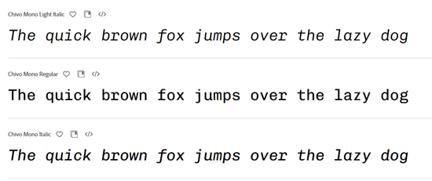
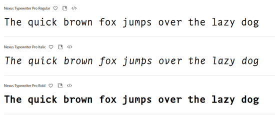

Font Types Article
Types of Fonts within Various Typefaces
There are six different typefaces and each kind has a use for which it is best suited. Some are better in textbooks while others are better suited for screens and others for attention grabbing. Once settled on a typeface, it can be fun to search through fonts within that family and decide what best fits the project, functionally and aesthetically.
Serif
The serif typeface includes fonts that are used in text-heavy applications, like books. This is because the decorative lines, called feet, that are at the end of each character help to guide the reader's eye along the line of text. A couple of example fonts within this typeface are below.
Warbler in Adobe Fonts is a nice serif font that has many variations, depending on the overall look the designer is trying to achieve. Another nice serif font from Adobe is called Adobe Aldine. Both of these fonts have the feet that help to guide the reader's eye along each line of text. They are simple and clean and do not distract from the message.
Sans Serif
Sans-serif typefaces lack the feet that define the previous serifs. They are clean and have modern look, used in both print and digital media. The minimalist style allows for versatility and ease of reading in many formats.
Komet and Roboto are two simple, but good, examples of the characteristics of Sans-Serif fonts.
Decorative
Decorative, also known as display, typefaces are very different from Serif and Sans-Serif. These types of fonts are used for attention grabbing. They are unique and more of a design statement than used for body text. They should be contained to elements like logos or headers as overuse can make readability difficult.
Gelato Luxe and Flegrei are two decorative fonts that would be fun or useful as titles. However, as evidenced by their appearance, they would not be good in the same situations for which a Serif or Sans-Serif is more fitting.
Script
Script typefaces mimic calligraphy or handwriting. They are more casual fonts and are used in situations like Decorative fonts; branding, logos, and situations where a more artistic touch is preferred.
Novantique Script and Absolute Beauty are good examples of Script text that has a more casual, flowing design suited for logos and branding.
Monospaced
Monospaced typefaces are those that have the same horizontal space and useful for situations requiring technical documentation or coding. Historically, they were also used in typewriters.
|   |
|---|
Chivo Mono and Nexus Typewriter are two good examples of monospaced fonts. Either of these would be good for writing code to keep text aligned.